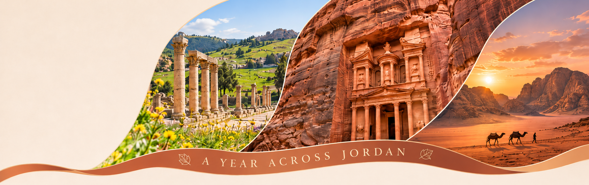
Best Time to Visit Jordan
Find your
season in
Jordan
Choose when to travel,
then explore what each
season offers.
The best time to visit Jordan is spring (March to May) and autumn (late September to November): warm days, cool evenings and ideal conditions for Petra and Wadi Rum. Winter suits the Dead Sea and Aqaba; summer is very hot inland, so plan early starts.
Jordan weather by month
Jordan weather, crowds and the best places to visit, month by month

January
- Weather: Cold in Amman and Petra, with rain possible; mild at the Dead Sea and Aqaba
- Best for: The Dead Sea, Aqaba, quiet sites
- Crowds: Quiet
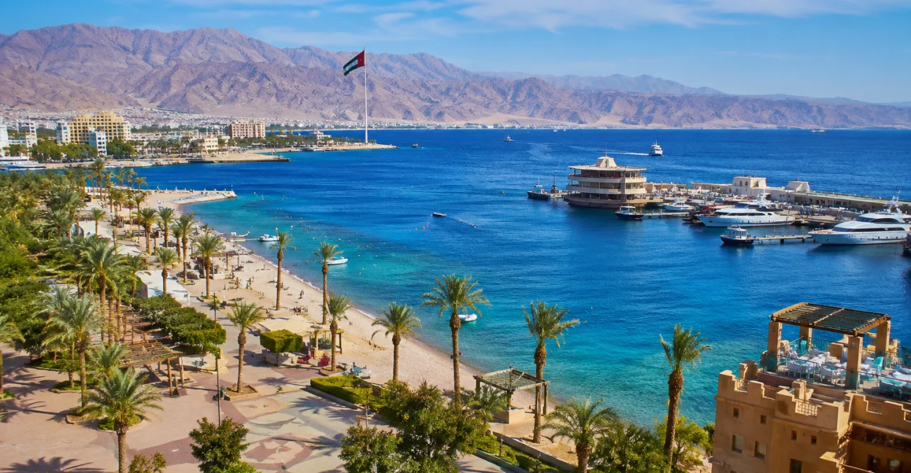
February
- Weather: Cold mornings, slowly warming; rain possible in the hills
- Best for: The Dead Sea, Aqaba, Petra without the crowds
- Crowds: Quiet
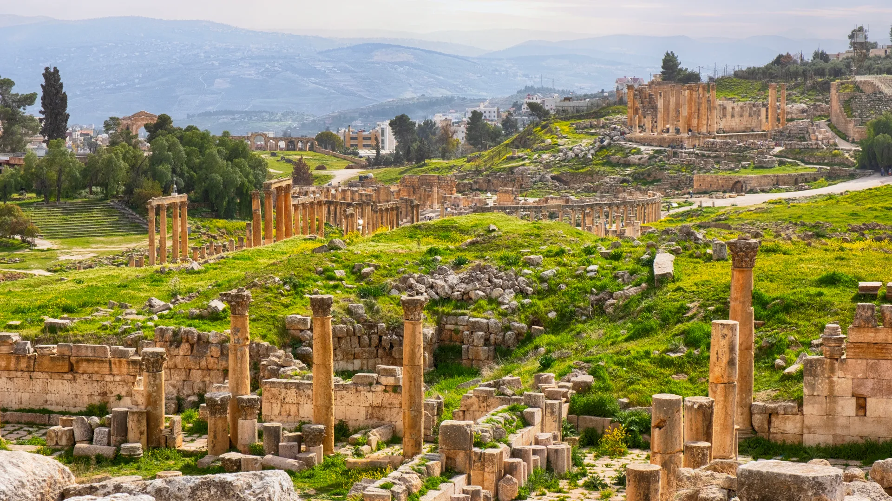
March
- Weather: Mild and fresh; green hills and wildflowers in the north
- Best for: Jerash, Amman, Petra
- Crowds: Getting busier

April
- Weather: Warm days and cool evenings
- Best for: Petra, Wadi Rum, walking
- Crowds: Busy
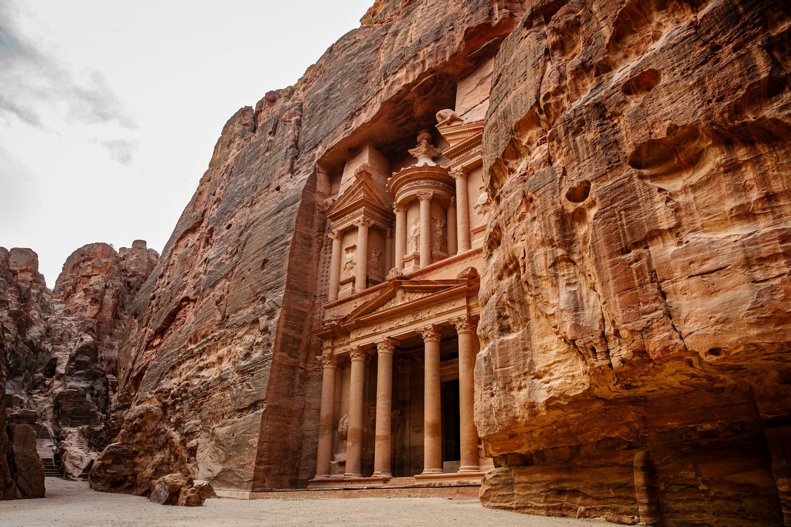
May
- Weather: Warm, turning hot by the end of the month
- Best for: Petra early in the day, Wadi Rum
- Crowds: Busy
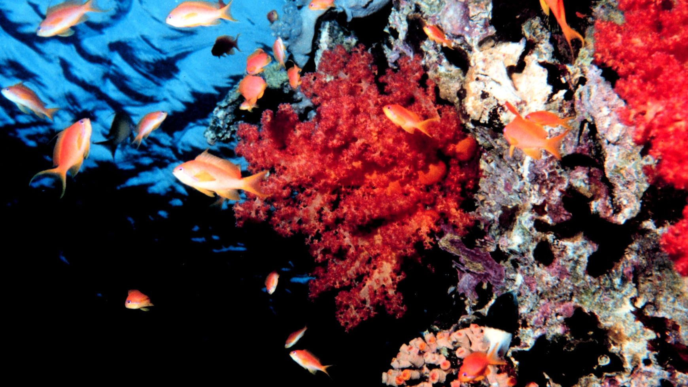
June
- Weather: Hot, and very hot in the desert and the Jordan Valley
- Best for: Aqaba’s reef, Amman’s evenings
- Crowds: Quieter
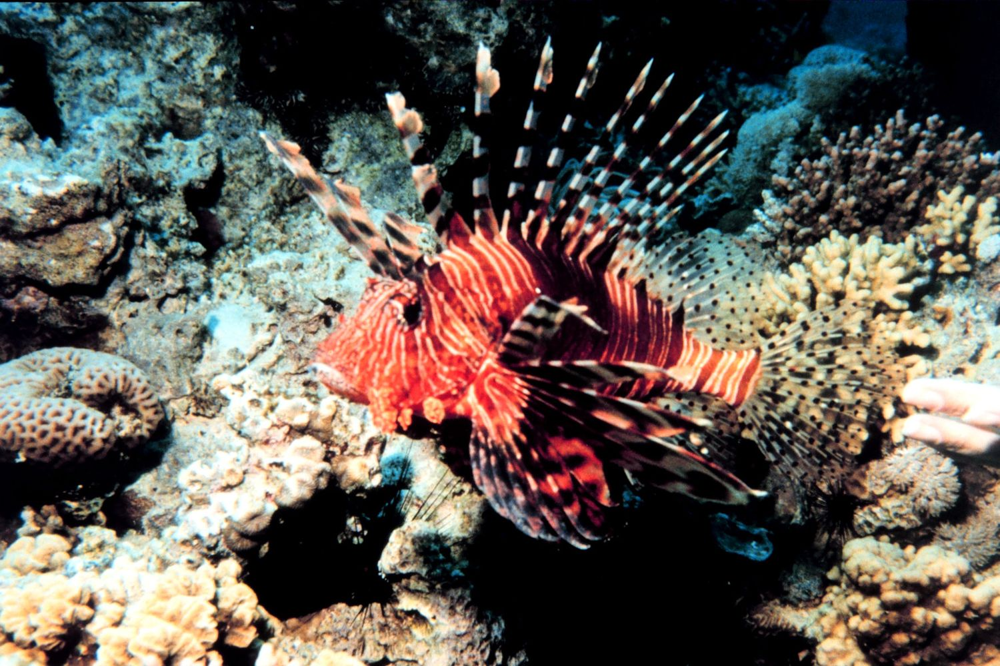
July
- Weather: The hottest time of year; Amman is milder
- Best for: Snorkelling in Aqaba, early-morning visits
- Crowds: Quieter at Petra and Wadi Rum
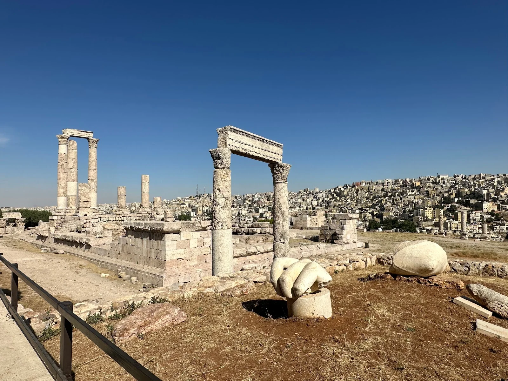
August
- Weather: Very hot, like July
- Best for: Snorkelling in Aqaba, Amman and the north
- Crowds: Quieter at Petra and Wadi Rum
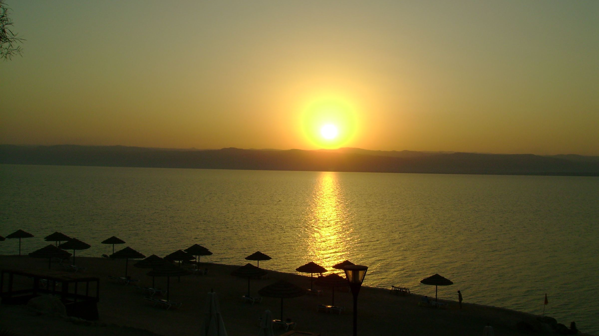
September
- Weather: Hot at first, easing late in the month
- Best for: Aqaba, the Dead Sea, Petra late in the month
- Crowds: Moderate
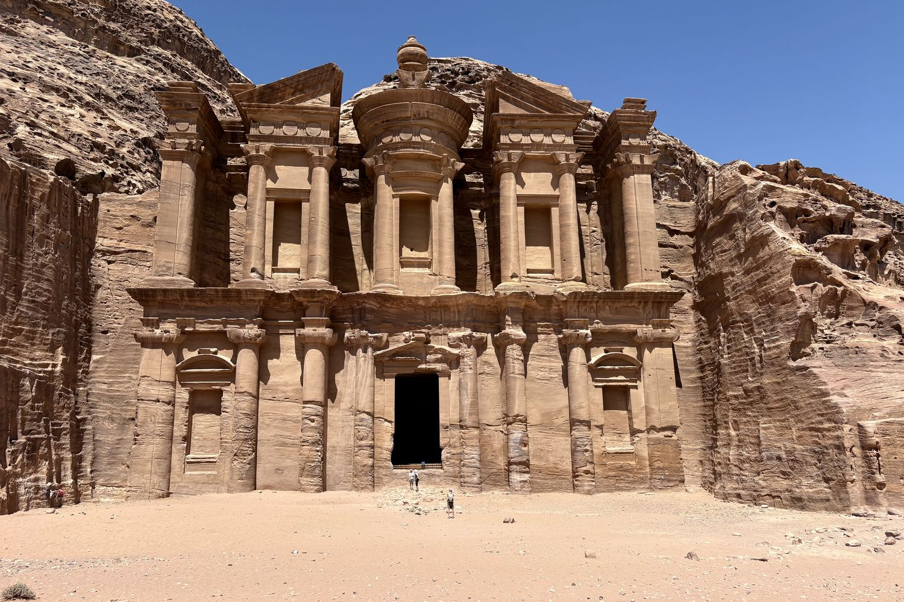
October
- Weather: Warm days and pleasant nights
- Best for: Petra, Wadi Rum, a full tour of the country
- Crowds: Busy
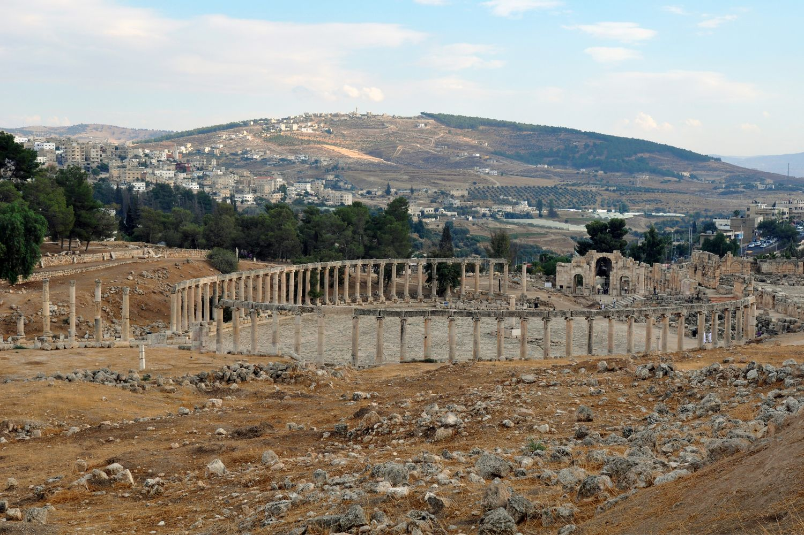
November
- Weather: Mild days, cooler nights; the first rain is possible
- Best for: Petra, Wadi Rum, Jerash
- Crowds: Moderate

December
- Weather: Cool to cold, with short days; mild at the Dead Sea and Aqaba
- Best for: The Dead Sea, Aqaba
- Crowds: Quiet
When to visit Jordan: the seasons at a glance
Jordan in spring
March to May
Warm days, cool evenings and wildflowers make spring a popular time to explore Jordan. Discover green northern landscapes, walk through Petra and enjoy the desert. Book busy periods early. Bring a light jacket for cooler evenings.
Jordan in summer
June to August
Plan sightseeing early or late, with a break during the hottest hours. Combine cultural visits with time by the sea in Aqaba, and allow a gentler pace for desert excursions. Bring sun protection and keep drinking water with you throughout the day.
Jordan in autumn
September to November
As summer heat eases, enjoy Petra’s walking trails and Wadi Rum’s desert scenery. Bring layers for cooler evenings, when staying overnight at a desert camp. Leave time for scenic stops, local meals and exploring Jordan’s towns along the way.
Jordan in winter
December to February
Pack warm layers and allow flexibility for rain and shorter days. Explore cultural sites at a relaxed pace, or head to the Dead Sea and Aqaba for milder weather. Start outings early to make the most of daylight, and keep your itinerary flexible.
Where to go, when
Recommended Plan around the weather
| Destination | Spring (Mar – May) | Summer (Jun – Aug) | Autumn (Sep – Nov) | Winter (Dec – Feb) |
|---|---|---|---|---|
| Petra | Recommended: Comfortable days for exploring | Plan around the weather: Hot – explore early or late | Recommended: Warm days and clear skies | Recommended: Cold days and fewer crowds |
| Wadi Rum | Recommended: Mild days for desert adventures | Plan around the weather: Very hot – choose cooler hours | Recommended: Warm days, cool camping nights | Recommended: Cold days and very cold nights |
| Dead Sea | Recommended: Warm days for floating and relaxing | Plan around the weather: Very hot – visit early or late | Recommended: Warm days for relaxing by the water | Plan around the weather: Cooler – choose sunny days |
| Aqaba | Recommended: Warm days for beach activities | Plan around the weather: Hot – enjoy the sea, avoid midday | Recommended: Warm seas and sunny days | Recommended: Mild days for a coastal break |
| Amman & Jerash | Recommended: Green hills and mild days | Plan around the weather: Hot – explore during cooler hours | Recommended: Comfortable days for exploring | Recommended: Cool to cold – allow for rain |
Your first trip to Jordan
Discover ancient cities, desert landscapes and time by the sea. Whether you have a few days or a longer stay, build a journey around the places and experiences that interest you, with time to explore and enjoy Jordanian hospitality.
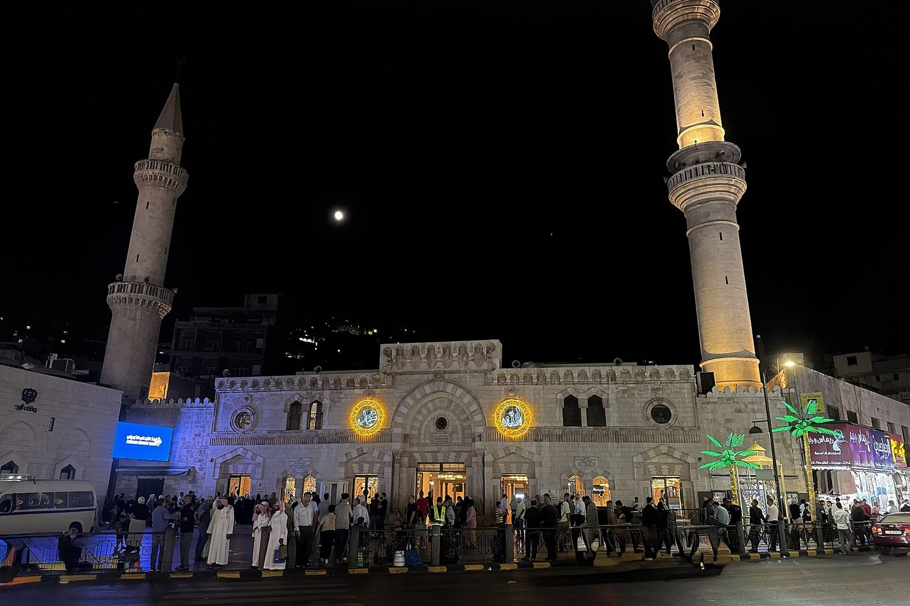
Ramadan & Eid
Experience another side of Jordan, from quiet daytime sightseeing to lively evenings around the iftar table. Allow flexibility for opening hours, and book ahead if travelling during Eid.
What to pack
Light & breathable
Pack loose, breathable clothing for warm days. Comfortable, modest outfits work well for sightseeing and visiting towns.
Layer up
Add a light jacket for cool evenings in spring and autumn. Pack warmer layers for winter and nights in the desert.
Outdoor essentials
Bring a hat, sunglasses, sunscreen and a refillable water bottle. Choose comfortable walking shoes with good grip.
Best time to visit Jordan: frequently asked questions
July and August are usually the hottest months. The heat is strongest in Wadi Rum, at the Dead Sea and in Aqaba, while Amman and the highlands are milder.
Yes, especially for the Dead Sea and Aqaba, which stay mild and sunny. Amman and Petra are cold and sometimes rainy, and the days are short, but the main sites are quieter. Bring warm layers.
Yes, with some planning. Arrive at opening time, walk in the morning, rest in the middle of the day and return in the late afternoon. Carry plenty of water, wear a hat and climb to the Monastery early.
Spring and autumn school holidays are ideal: the weather suits walking in Petra and a night at a desert camp in Wadi Rum. Winter breaks are good for the Dead Sea and Aqaba. Summer works with early starts and afternoons at the pool or the beach.
Five to eight days covers the highlights. Five days fits Amman, Petra, Wadi Rum and the Dead Sea; six or seven add Jerash or a slower pace; eight let you see it all without rushing. See our 5-day Jordan Explorer, 6-day Jordan Delights Tour 1, 7-day Jordan Discovery Tour and 8-day Grand Jordan Tour.